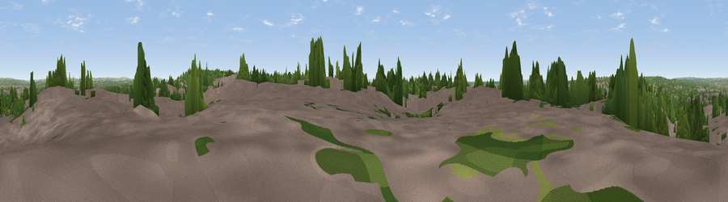

Viewpoint near West End
#34810 in England · top 50% of its area beats it · near West EndThe view, rendered

A 360° render of this exact spot computed from the terrain model, tree cover and land cover — summer colours, afternoon light, calibrated against photographs of famous viewpoints. Real trees, hedges and buildings will differ in detail.
The panorama
Grey silhouette: terrain skyline in each direction (720 bearings, Earth curvature and refraction included). Dashed green: skyline with trees (+15 m) and buildings (+8 m) as obstacles. Blue strip: how far the ground is visible on each bearing.
Where the view opens
Wedge length = distance to the farthest visible ground on that bearing (vegetation-aware). Rings at 10, 25 and 50 km.
What fills the view
43% built-up · 42% woodland · 12% grassland · 2% water · 1% cropland
Angular shares of the visible panorama (visual magnitude), not map area. Landscape diversity 0.48 (0–1 Shannon).
Key numbers
More beautiful places nearby
The staircase of upgrades: each row has a higher view potential than everything closer. Driving times are estimates from straight-line distance, calibrated against real road routing — check an actual route before setting out.
| Place | Direction | Drive | Score |
|---|---|---|---|
| Viewpoint near Lower Swanwick | SE · 5 km | ~12 min | 42.4 |
| Viewpoint near Upton | NW · 8 km | ~16 min | 46.3 |
| Cockscomb Hill | NNE · 11 km | ~21 min | 50.4 |
| Viewpoint near Owslebury | NE · 12 km | ~22 min | 52.3 |
| Violet Hill | NNW · 14 km | ~25 min | 55.7 |
| Deacon Hill | NNE · 15 km | ~26 min | 59.8 |
| Viewpoint near Droxford | ENE · 15 km | ~27 min | 61.7 |
| Viewpoint near Sparsholt | NNW · 15 km | ~27 min | 66.9 |
50.92620, -1.36501 · source: screening · position refined by local search. Computed location — check access rights before visiting.